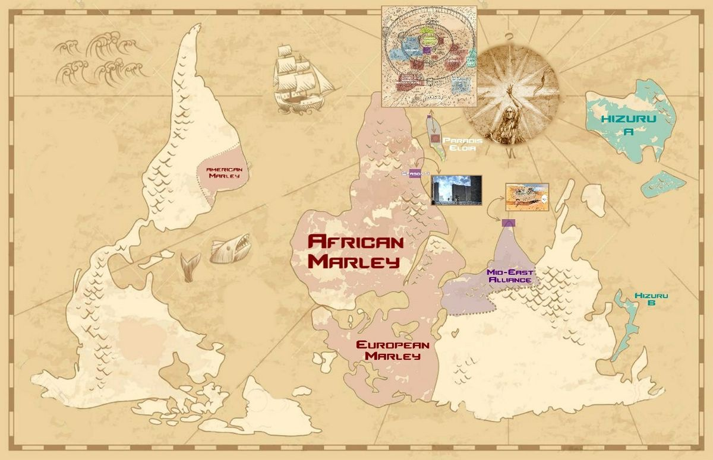
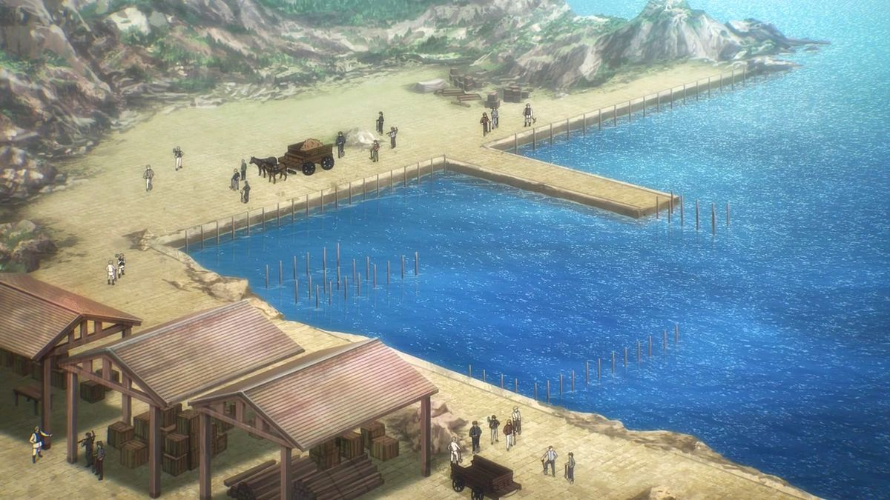
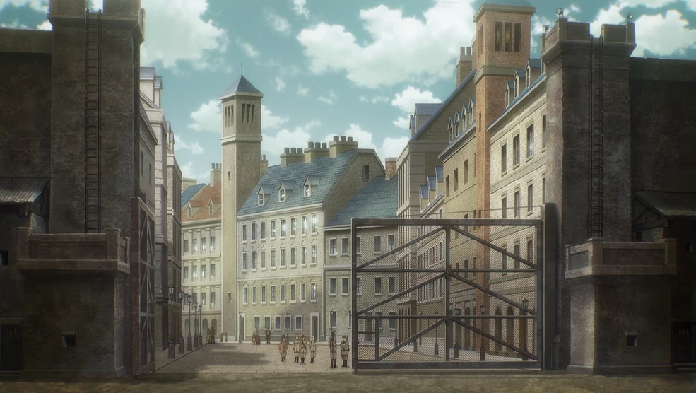
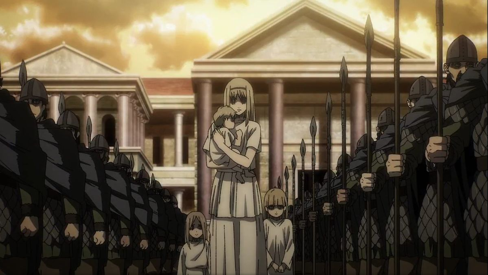
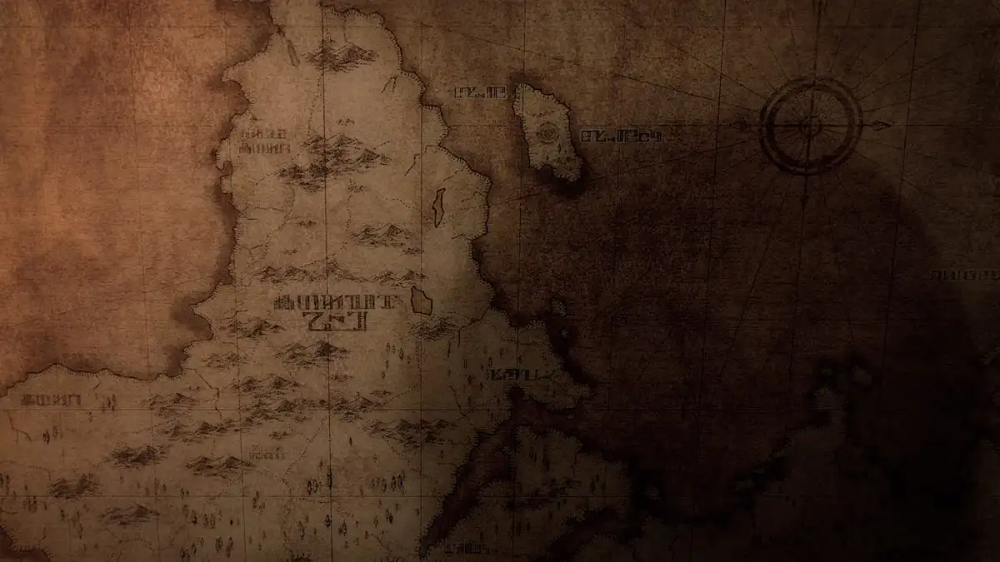

World

About the world
The world of Attack on Titan is divided into several nations and territories, each with its own history, culture, and political interests. Its geography resembles our own world, although its countries and locations have different names. Among its most important territories are Paradis Island and Marley, whose conflict plays a central role in the story. Beyond them, several other nations and civilizations exist, revealing a much larger world than the inhabitants of the Walls once imagined.

Paradis
Paradis is an island located east of the Marleyan mainland. It is the home of the people who lived within the three Walls, which were built to protect humanity from the Titans. For over a century, its inhabitants believed that the Walls contained the last remnants of humanity. The island also possesses valuable natural resources, making it an important territory in the world's political conflicts.

Marley
Marley is a powerful nation located on the mainland, west of Paradis Island. It is a major military and political power, with influence over several territories and other nations. Marley has a long history of conflict with Eldia and maintains a strict social system in which Eldians living within its territory face discrimination and segregation.

Eldia
Eldia was an ancient empire that once controlled vast territories and played a major role in the history of the world. Its power was closely connected to the existence of the Titans and the subjects of Ymir. After the empire's fall, the Eldian population became divided between those who remained on Paradis Island and those who continued living on the mainland, particularly under Marley's rule.

The Outside World
Beyond Paradis and Marley, the world contains numerous other countries, cultures, and civilizations. Among those mentioned in the story are Hizuru and the Mid-East Allied Forces. These territories reveal the diversity of the outside world, with different political systems, traditions, and conflicts. Their landscapes and cultures draw inspiration from various regions of our own world, including areas reminiscent of Africa and Asia.